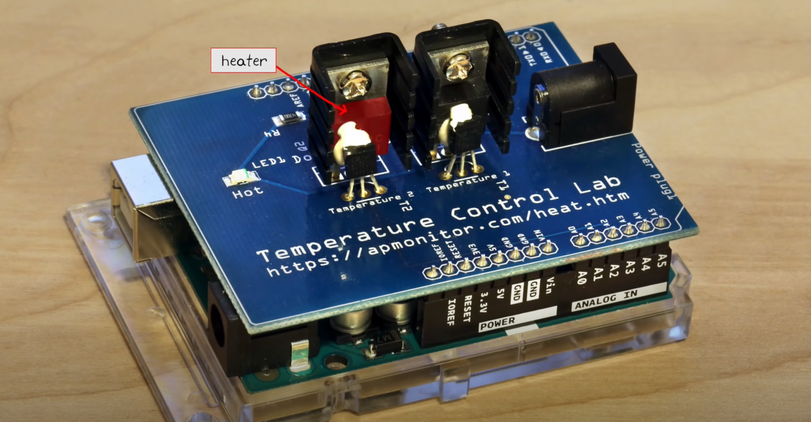

a=456Understanding TCLab
The TCLab Python Package
The accompanying diagram shows how to access the temperature contol laboratory using the TCLab library.

Jupyter notebooks and Python scripts: The highest level consists of the you code you write to implement control algorithms. This can be done in Jupyter/Python notebooks, directly from Python using a development environment such as Spyder or PyCharm. This repository contains several examples, lessons, and student projects.
TCLab: TCLab consists of a Python library entitled tclab that provides high-level access to sensors, heaters, a pseudo-realtime clock. The package includes TCLab() class that creates an object to access to the device, an iterator clock for synchronizing with a real time clock, Historian() class to create objects for data logging, and a Plotter() class to visualize data in realtime.
TCLab-sketch: The TCLab-sketch github repository provides firmware to ensure intrisically safe operation of the Arduino board and shield. The sketch is downloaded to the Arduino using the Arduino IDE. Loading firmware to the Arduino is a one-time operation.
Arduino: The hardware platform for the Temperature Control Laboratory. The Python tools and libraries have been tested with the Arduino Uno and Arduino Leonardo boards.
From: CBE32338
The Core Components of TCLab
 

The Temperature Control Lab (TCLab) is an integrated system composed of several key components, each contributing significantly to its functionality:
- Arduino Microcontroller:
- Purpose: Serves as the central processing unit for the TCLab.
- Functionality: Processes input data from temperature sensors and manages the operation of heaters.
- Connectivity: Utilizes a USB connection for data transfer and allows for real-time control through Python scripts.
- Heaters:
- Description: TCLab features two heaters, each capable of generating adjustable thermal energy.
- Role: Act as the main heat sources for experiments, replicating scenarios requiring temperature regulation. They function as the system’s actuators.
- Temperature Sensors:
- Type: These sensors are thermistors, a kind of resistor whose resistance varies with temperature changes.
- Measurement Range: Capable of measuring temperatures ranging from \(-40^\circ\)C to \(150^\circ\)C.
- Functionality: Positioned near each heater to accurately measure temperature, providing essential feedback for temperature control.
- Heat Sinks:
- Type: Comprised of transistor heat sinks.
- Purpose: Employed to efficiently dissipate heat away from the transistors.
- LED (Light Emitting Diode):
- Purpose: Serves as a visual indicator for various states or actions, such as signaling the activation of a heater.
Operational Configurations of TCLab
TCLab can be configured in various modes depending on the educational objectives:
- Single Input Single Output (SISO):
- Utilizes only one heater and one sensor. Ideal for simple control experiments and learning the basics of temperature control.
- Single Input Single Output (SISO) with Disturbance:
- Employs one heater/sensor as the primary control system and the second heater as a source of external disturbance. This setup is useful for understanding how external factors influence control systems.
- Multiple Inputs Multiple Outputs (MIMO):
- Involves using both heaters and sensors simultaneously. This more advanced configuration isn’t covered here but is valuable for complex control system studies.
Each component of the TCLab plays a specific role, making it a versatile tool for teaching and experimenting with various aspects of control engineering. Whether for fundamental learning or advanced exploration, TCLab offers a practical platform for understanding the dynamics and control of temperature-based systems.
How TCLab Works
- Operation Flow:
- Input Signal: A Python script sends a command to the Arduino, setting the desired power level for the heaters.
- Heating Action: The heaters generate heat corresponding to the received power level commands.
- Temperature Measurement: The thermistors measure the resulting temperatures near the heaters.
- Feedback Loop: These temperature readings are sent back to the computer.
- Adjustments: The control algorithm in the Python script adjusts the heater power based on the temperature feedback, striving to reach and maintain a target temperature.
[Insert Flowchart or Diagram Showing the Feedback Loop Here]
TCLab Schematics
 |
Setting Up TCLab
This guide provides step-by-step instructions for setting up the Temperature Control Lab (TCLab), starting from installing Python on different operating systems to conducting initial tests with TCLab and its simulator.
Section 1: Installing Python Using Conda
Installing Python on Mac
Step 1: Install Anaconda
- Download Anaconda: Visit the Anaconda Download Page and download the installer for Mac.
- Run Installer: Open the downloaded file and follow the on-screen instructions.
- Verify Installation:
- Open Terminal.
- Type
conda --versionand press Enter. If Anaconda is successfully installed, you’ll see the version number.
Step 2: Set Up Environment (Optional)
- Create a New Environment: In Terminal, type
conda create -n tclab_env python=3.8and press Enter. - Activate Environment: Type
conda activate tclab_envand press Enter.
Installing Python on Windows
Step 1: Install Anaconda
- Download Anaconda: Visit the Anaconda Download Page and download the installer for Windows.
- Run Installer: Open the downloaded file and follow the on-screen instructions.
- Verify Installation:
- Open Anaconda Prompt.
- Type
conda --versionand press Enter.
Step 2: Set Up Environment (Optional)
- Create a New Environment: In Anaconda Prompt, type
conda create -n tclab_env python=3.8and press Enter. - Activate Environment: Type
conda activate tclab_envand press Enter.
Installing Python on Linux
Step 1: Install Anaconda
- Download Anaconda: Visit the Anaconda Download Page and download the installer for Linux.
- Run Installer: Open Terminal, navigate to the directory containing the downloaded file, and run the script using
bash Anaconda3-XXXX.sh. - Verify Installation:
- In Terminal, type
conda --version.
- In Terminal, type
Step 2: Set Up Environment (Optional)
- Create a New Environment: In Terminal, type
conda create -n tclab_env python=3.8and press Enter. - Activate Environment: Type
conda activate tclab_envand press Enter.
Section 2: Setting Up TCLab
Setting Up the Conda Environment
To set up the Conda environment for this course, follow these steps:
- Download the
tclab_environment.ymlfile from this repository. - Open your terminal or Anaconda Prompt and navigate to the directory where the file is located.
The file tclab_environment.yml looks like this:
name: tclab_env
channels:
- defaults
dependencies:
- python=3.10
- pip
- numpy
- matplotlib
- scipy
- pandas
- pip:
- tclabCreate the environment from the
tclab_environment.ymlfile:conda env create -f tclab_environment.ymlActivate the new environment:
conda activate tclabTo verify that the environment was installed correctly, you can use:
conda env list
Installing the TCLab Package
Activating the Environment:
Ensure your Anaconda environment is active. Open your Terminal (or Anaconda Prompt on Windows) and activate your environment:
conda activate tclab_env
Installing TCLab:
The
tclablibrary interfaces with the Temperature Control Lab hardware. Install it by entering the following command from a window (MacOS) or command window (PC):pip install tclabPress Enter to execute the command and complete the installation.
Alternatively, the installation can be performed from within a Jupyter/Python notebook with the command
!pip install tclabThere are occasional updates to the library. These can be installed by appending a
--upgradeto the above commands and demonstrated in the next cell.
!python -m pip install tclab --upgradeRequirement already satisfied: tclab in /Users/andreamunafo/opt/anaconda3/envs/tclab/lib/python3.10/site-packages (1.0.0)
Requirement already satisfied: pyserial in /Users/andreamunafo/opt/anaconda3/envs/tclab/lib/python3.10/site-packages (from tclab) (3.5)Installing Additional Useful Libraries
For a comprehensive experience with TCLab and to support various aspects of control engineering and data analysis, the following libraries will also be installed:
- numpy:
Significance: A fundamental library for numerical computations in Python.
Installation Command:
pip install numpy
- matplotlib:
Significance: Crucial for creating visual representations of data, especially for the analysis of TCLab experiments.
Installation Command:
pip install matplotlib
- scipy:
Significance: Provides a broad range of tools for scientific computing, including methods for solving ordinary differential equations, useful in system modeling.
Installation Command:
pip install scipy
- pandas:
Significance: Offers extensive features for data manipulation and analysis, ideal for handling complex datasets.
Installation Command:
pip install pandas
- gekko:
Significance: Advanced package for optimization and control, suitable for implementing model predictive control strategies.
Installation Command:
pip install gekko
Initial Tests with TCLab
Step 1: Connect TCLab
- Connect TCLab: Plug in the TCLab device to your computer using a USB cable.
Step 2: Test TCLab Connection
- Write Test Script:
- Open your Python IDE or Jupyter Notebook.
- Write the following Python code and run the script. If it prints the temperature, TCLab is connected properly.
import tclabwith tclab.TCLab() as lab:
print(f"Connected! Heater 1 is at {lab.T1}°C")TCLab version 1.0.0
Arduino Leonardo connected on port /dev/cu.usbmodem142101 at 115200 baud.
TCLab Firmware 3.0.0 Arduino Leonardo/Micro.
Connected! Heater 1 is at 24.024°C
TCLab disconnected successfully.Using TCLab Simulator
- Why Use a Simulator: The TCLab simulator is useful when you don’t have the physical hardware available.
- Install Simulator: In Terminal or Anaconda Prompt, type
pip install tclabagain (it includes the simulator). - Test Script with Simulator:
from tclab import TCLabModel as TCLab, setup, clockwith TCLab() as lab:
for t in clock(200, 2):
print(f"Time {t} seconds. T1: {lab.T1}°C")TCLab version 1.0.0
Simulated TCLab
Time 0 seconds. T1: 20.949499999999997°C
Time 2.01 seconds. T1: 20.949499999999997°C
Time 4.24 seconds. T1: 20.949499999999997°C
Time 6.23 seconds. T1: 20.949499999999997°C
Time 8.22 seconds. T1: 20.949499999999997°C
Time 10.18 seconds. T1: 20.949499999999997°C
Time 12.18 seconds. T1: 20.949499999999997°C
Time 14.2 seconds. T1: 20.6272°C
Time 16.15 seconds. T1: 20.949499999999997°C
Time 18.01 seconds. T1: 20.949499999999997°C
Time 20.23 seconds. T1: 20.949499999999997°C
Time 22.17 seconds. T1: 20.6272°C
Time 24.12 seconds. T1: 20.949499999999997°C
Time 26.02 seconds. T1: 20.949499999999997°C
Time 28.02 seconds. T1: 20.949499999999997°C
Time 30.02 seconds. T1: 20.949499999999997°C
Time 32.15 seconds. T1: 20.949499999999997°C
Time 34.09 seconds. T1: 20.949499999999997°C
Time 36.03 seconds. T1: 20.949499999999997°C
Time 38.21 seconds. T1: 20.949499999999997°C
Time 40.25 seconds. T1: 20.949499999999997°C
Time 42.25 seconds. T1: 20.949499999999997°C
Time 44.13 seconds. T1: 20.949499999999997°C
Time 46.28 seconds. T1: 20.949499999999997°C
Time 48.17 seconds. T1: 20.949499999999997°C
Time 50.15 seconds. T1: 20.949499999999997°C
Time 52.04 seconds. T1: 20.6272°C
Time 54.27 seconds. T1: 20.949499999999997°C
Time 56.04 seconds. T1: 20.949499999999997°C
Time 58.04 seconds. T1: 20.949499999999997°C
Time 60.06 seconds. T1: 20.949499999999997°C
Time 62.19 seconds. T1: 20.949499999999997°C
Time 64.04 seconds. T1: 20.949499999999997°C
Time 66.14 seconds. T1: 20.949499999999997°C
Time 68.21 seconds. T1: 20.949499999999997°C
Time 70.25 seconds. T1: 20.949499999999997°C
Time 72.14 seconds. T1: 20.949499999999997°C
Time 74.26 seconds. T1: 20.949499999999997°C
Time 76.16 seconds. T1: 20.949499999999997°C
Time 78.03 seconds. T1: 20.949499999999997°C
Time 80.2 seconds. T1: 20.949499999999997°C
Time 82.09 seconds. T1: 20.949499999999997°C
Time 84.11 seconds. T1: 20.6272°C
Time 86.29 seconds. T1: 20.949499999999997°C
Time 88.01 seconds. T1: 20.949499999999997°C
Time 90.26 seconds. T1: 20.949499999999997°C
Time 92.0 seconds. T1: 20.949499999999997°C
Time 94.2 seconds. T1: 20.949499999999997°C
Time 96.14 seconds. T1: 20.949499999999997°C
Time 98.08 seconds. T1: 20.949499999999997°C
Time 100.02 seconds. T1: 20.949499999999997°C
Time 102.26 seconds. T1: 20.949499999999997°C
Time 104.28 seconds. T1: 20.949499999999997°C
Time 106.08 seconds. T1: 20.949499999999997°C
Time 108.16 seconds. T1: 20.949499999999997°C
Time 110.25 seconds. T1: 20.949499999999997°C
Time 112.2 seconds. T1: 20.949499999999997°C
Time 114.0 seconds. T1: 20.949499999999997°C
Time 116.06 seconds. T1: 20.949499999999997°C
Time 118.02 seconds. T1: 20.6272°C
Time 120.0 seconds. T1: 20.949499999999997°C
Time 122.01 seconds. T1: 20.6272°C
Time 124.09 seconds. T1: 20.6272°C
Time 126.16 seconds. T1: 20.6272°C
Time 128.1 seconds. T1: 20.949499999999997°C
Time 130.01 seconds. T1: 20.949499999999997°C
Time 132.01 seconds. T1: 20.949499999999997°C
Time 134.25 seconds. T1: 20.949499999999997°C
Time 136.23 seconds. T1: 20.949499999999997°C
Time 138.23 seconds. T1: 20.949499999999997°C
Time 140.19 seconds. T1: 20.949499999999997°C
Time 142.06 seconds. T1: 20.949499999999997°C
Time 144.21 seconds. T1: 20.6272°C
Time 146.02 seconds. T1: 20.949499999999997°C
Time 148.08 seconds. T1: 20.949499999999997°C
Time 150.09 seconds. T1: 20.949499999999997°C
Time 152.02 seconds. T1: 20.949499999999997°C
Time 154.02 seconds. T1: 20.949499999999997°C
Time 156.21 seconds. T1: 20.949499999999997°C
Time 158.23 seconds. T1: 20.949499999999997°C
Time 160.02 seconds. T1: 20.949499999999997°C
Time 162.24 seconds. T1: 20.949499999999997°C
Time 164.12 seconds. T1: 20.949499999999997°C
Time 166.29 seconds. T1: 20.949499999999997°C
Time 168.06 seconds. T1: 20.949499999999997°C
Time 170.19 seconds. T1: 20.949499999999997°C
Time 172.19 seconds. T1: 20.949499999999997°C
Time 174.27 seconds. T1: 20.949499999999997°C
Time 176.27 seconds. T1: 20.949499999999997°C
Time 178.07 seconds. T1: 20.949499999999997°C
Time 180.13 seconds. T1: 20.949499999999997°C
Time 182.19 seconds. T1: 20.6272°C
Time 184.03 seconds. T1: 20.949499999999997°C
Time 186.23 seconds. T1: 20.949499999999997°C
Time 188.04 seconds. T1: 20.949499999999997°C
Time 190.16 seconds. T1: 20.6272°C
Time 192.25 seconds. T1: 20.949499999999997°C
Time 194.06 seconds. T1: 20.949499999999997°C
Time 196.0 seconds. T1: 20.949499999999997°C
Time 198.24 seconds. T1: 20.949499999999997°C
Time 200.01 seconds. T1: 20.949499999999997°C
TCLab Model disconnected successfully.from tclab import setup, clock
TCLab = setup(connected=False, speedup=5)
with TCLab() as lab:
for t in clock(200, 2):
print(f"Time {t} seconds. T1: {lab.T1}°C")TCLab version 1.0.0
Simulated TCLab
Time 0 seconds. T1: 20.949499999999997°C
Time 2.03 seconds. T1: 20.949499999999997°C
Time 4.0 seconds. T1: 20.949499999999997°C
Time 6.02 seconds. T1: 20.949499999999997°C
Time 8.05 seconds. T1: 20.949499999999997°C
Time 10.06 seconds. T1: 20.949499999999997°C
Time 12.0 seconds. T1: 20.949499999999997°C
Time 14.1 seconds. T1: 20.949499999999997°C
Time 16.1 seconds. T1: 20.949499999999997°C
Time 18.08 seconds. T1: 20.949499999999997°C
Time 20.21 seconds. T1: 20.949499999999997°C
Time 22.15 seconds. T1: 20.949499999999997°C
Time 24.12 seconds. T1: 20.6272°C
Time 26.01 seconds. T1: 20.949499999999997°C
Time 28.21 seconds. T1: 20.6272°C
Time 30.14 seconds. T1: 20.949499999999997°C
Time 32.01 seconds. T1: 20.949499999999997°C
Time 34.01 seconds. T1: 20.949499999999997°C
Time 36.01 seconds. T1: 20.949499999999997°C
Time 38.18 seconds. T1: 20.949499999999997°C
Time 40.0 seconds. T1: 20.949499999999997°C
Time 42.16 seconds. T1: 20.949499999999997°C
Time 44.02 seconds. T1: 20.949499999999997°C
Time 46.12 seconds. T1: 20.949499999999997°C
Time 48.02 seconds. T1: 20.949499999999997°C
Time 50.29 seconds. T1: 20.949499999999997°C
Time 52.19 seconds. T1: 20.949499999999997°C
Time 54.23 seconds. T1: 20.949499999999997°C
Time 56.14 seconds. T1: 20.949499999999997°C
Time 58.29 seconds. T1: 20.949499999999997°C
Time 60.15 seconds. T1: 20.6272°C
Time 62.18 seconds. T1: 20.949499999999997°C
Time 64.25 seconds. T1: 20.949499999999997°C
Time 66.04 seconds. T1: 20.6272°C
Time 68.2 seconds. T1: 20.6272°C
Time 70.18 seconds. T1: 20.949499999999997°C
Time 72.14 seconds. T1: 20.949499999999997°C
Time 74.22 seconds. T1: 20.949499999999997°C
Time 76.04 seconds. T1: 20.949499999999997°C
Time 78.09 seconds. T1: 20.949499999999997°C
Time 80.05 seconds. T1: 20.949499999999997°C
Time 82.11 seconds. T1: 20.949499999999997°C
Time 84.24 seconds. T1: 20.949499999999997°C
Time 86.23 seconds. T1: 20.949499999999997°C
Time 88.16 seconds. T1: 20.949499999999997°C
Time 90.08 seconds. T1: 20.949499999999997°C
Time 92.08 seconds. T1: 20.6272°C
Time 94.29 seconds. T1: 20.949499999999997°C
Time 96.12 seconds. T1: 20.949499999999997°C
Time 98.22 seconds. T1: 20.949499999999997°C
Time 100.12 seconds. T1: 20.949499999999997°C
Time 102.2 seconds. T1: 20.949499999999997°C
Time 104.02 seconds. T1: 20.6272°C
Time 106.15 seconds. T1: 20.949499999999997°C
Time 108.24 seconds. T1: 20.949499999999997°C
Time 110.09 seconds. T1: 20.949499999999997°C
Time 112.01 seconds. T1: 20.949499999999997°C
Time 114.04 seconds. T1: 20.949499999999997°C
Time 116.13 seconds. T1: 20.6272°C
Time 118.25 seconds. T1: 20.949499999999997°C
Time 120.23 seconds. T1: 20.949499999999997°C
Time 122.15 seconds. T1: 20.949499999999997°C
Time 124.17 seconds. T1: 20.949499999999997°C
Time 126.23 seconds. T1: 20.949499999999997°C
Time 128.22 seconds. T1: 20.949499999999997°C
Time 130.09 seconds. T1: 20.6272°C
Time 132.21 seconds. T1: 20.949499999999997°C
Time 134.28 seconds. T1: 20.949499999999997°C
Time 136.17 seconds. T1: 20.949499999999997°C
Time 138.2 seconds. T1: 20.949499999999997°C
Time 140.02 seconds. T1: 20.949499999999997°C
Time 142.2 seconds. T1: 20.949499999999997°C
Time 144.19 seconds. T1: 20.949499999999997°C
Time 146.19 seconds. T1: 20.949499999999997°C
Time 148.02 seconds. T1: 20.949499999999997°C
Time 150.27 seconds. T1: 20.949499999999997°C
Time 152.22 seconds. T1: 20.949499999999997°C
Time 154.16 seconds. T1: 20.949499999999997°C
Time 156.19 seconds. T1: 20.949499999999997°C
Time 158.22 seconds. T1: 20.949499999999997°C
Time 160.27 seconds. T1: 20.949499999999997°C
Time 162.03 seconds. T1: 20.949499999999997°C
Time 164.02 seconds. T1: 20.949499999999997°C
Time 166.09 seconds. T1: 20.949499999999997°C
Time 168.24 seconds. T1: 20.949499999999997°C
Time 170.13 seconds. T1: 20.6272°C
Time 172.06 seconds. T1: 20.949499999999997°C
Time 174.28 seconds. T1: 20.949499999999997°C
Time 176.01 seconds. T1: 20.949499999999997°C
Time 178.19 seconds. T1: 20.6272°C
Time 180.28 seconds. T1: 20.949499999999997°C
Time 182.22 seconds. T1: 20.949499999999997°C
Time 184.0 seconds. T1: 20.949499999999997°C
Time 186.15 seconds. T1: 20.949499999999997°C
Time 188.01 seconds. T1: 20.949499999999997°C
Time 190.23 seconds. T1: 20.949499999999997°C
Time 192.0 seconds. T1: 20.949499999999997°C
Time 194.24 seconds. T1: 20.949499999999997°C
Time 196.06 seconds. T1: 20.949499999999997°C
Time 198.26 seconds. T1: 20.949499999999997°C
Time 200.07 seconds. T1: 20.949499999999997°C
TCLab Model disconnected successfully.Importing
Once installed, the tclab package can be imported into Python and an instance created with the Python statements
from tclab import TCLab
lab = TCLab()TCLab() attempts to find a device connected to a serial port and return a connection. An error is generated if no device is found. The connection should be closed when no longer in use.
The following cell demonstrates this process, and uses the tclab LED() function to flash the LED on the Temperature Control Lab for a period of 10 seconds at a 100% brightness level.
from tclab import TCLab
lab = TCLab()
lab.LED(100)
lab.close()TCLab version 1.0.0
--- Serial Ports ---
/dev/cu.BLTH n/a n/a
/dev/cu.BlueBeatsStudio n/a n/a
/dev/cu.Bluetooth-Incoming-Port n/a n/aRuntimeError: No Arduino device found.Using TCLab with Python’s with statement
The Python with statement provides a convenient means of setting up and closing a connection to the Temperature Control Laboratory. In particular, the with statement establishes a context where a tclab instance is created, assigned to a variable, and automatically closed upon completion. The with statement is the preferred way to connect the Temperature Control Laboratory for most uses.
from tclab import TCLab
with TCLab() as lab:
lab.LED(100)Reading Temperatures
Once a tclab instance is created and connected to a device, the temperature sensors on the temperature control lab can be acccessed with the attributes .T1 and .T2. For example, given an instance lab, the temperatures are accessed as
T1 = lab.T1
T2 = lab.T2lab.T1 and lab.T2 are read-only properties. Any attempt to set them to a value will return a Python error.
from tclab import TCLab
with TCLab() as a:
print("Temperature 1: {0:0.2f} C".format(a.T1))
print("Temperature 2: {0:0.2f} C".format(a.T2))Setting Heaters
For legacy reasons, there are two ways to set the power levels of the heaters.
The first way is to the functions.Q1() and .Q2() of a TCLab instance. For example, both heaters can be set to 100% power with the functions
lab = TCLab()
lab.Q1(100)
lab.Q2(100)The device firmware limits the heaters to a range of 0 to 100%. The current value of attributes may be accessed via
Q1 = lab.Q1()
Q2 = lab.Q2()Important notes: 1. The led on the temperature control laboratory will turns from dim to bright when either heater is on. 2. Closing the TCLab instance turns the heaters off. 3. The power level of the two heaters may be different. Current versions of the firmware limit maximum power of first heater to 4 watts, and maxium power of the second heater to 2 watts. 4. In addition to the constraints imposed by the firmware, the power supply may not be capable of providing all of the power needed to operate both heaters at 100% 5. The values retrieved from these functions may be different than the values set due to the power limits enforced by the device firmware.
from tclab import TCLab
import time
with TCLab() as a:
print("\nStarting Temperature 1: {0:0.2f} C".format(a.T1),flush=True)
print("Starting Temperature 2: {0:0.2f} C".format(a.T2),flush=True)
a.Q1(100)
a.Q2(100)
print("\nSet Heater 1:", a.Q1(), "%",flush=True)
print("Set Heater 2:", a.Q2(), "%",flush=True)
t_heat = 30
print("\nHeat for", t_heat, "seconds")
time.sleep(t_heat)
print("\nTurn Heaters Off")
a.Q1(0)
a.Q2(0)
print("\nSet Heater 1:", a.Q1(), "%",flush=True)
print("Set Heater 2:", a.Q2(), "%",flush=True)
print("\nFinal Temperature 1: {0:0.2f} C".format(a.T1))
print("Final Temperature 2: {0:0.2f} C".format(a.T2))Alternatively, the heaters can be set using the .U1 and .U2 attributes of a TCLab instance.
lab = TCLab()
print('Setting power levels on heaters 1 and 2')
lab.U1 = 50
lab.U2 = 25
print('Current power level on Heater 1 is: ', lab.U1, '%')
print('Current power level on Heater 1 is: ', lab.U2, '%')
lab.close()Synchronizing with Real Time using clock
The tclab module includes clock for synchronizing calculations with real time. clock(tperiod, tstep) generates a sequence of iterations over a period of tperiod seconds evenly by tstep seconds. If tstep is omitted then the default period is set to 1 second.
from tclab import clock
tperiod = 6
tstep = 2
for t in clock(tperiod,tstep):
print(t, "sec.")There are some considerations to keep in mind when using clock. Most important, by its nature Python is not a real-time environment. clock makes a best effort to stay in sync with evenly spaced ticks of the real time clock. If, for some reason, the loop falls behind the real time clock, then the generator will skip over the event to get back in sync with the real time clock. Thus the total number of iterations may be less than expected. This behavior is demonstrated in the following cell.
from tclab import TCLab, clock
import time
tfinal = 12
tstep = 2
for t in clock(tfinal, tstep):
print(t, "sec.")
# insert a long time out between 3 and 5 seconds into the event loop
if (t > 3) and (t < 5):
time.sleep(2.2)Using clock with TCLab
from tclab import TCLab, clock
tperiod = 20
# connect to the temperature control lab
with TCLab() as a:
# turn heaters on
a.Q1(100)
a.Q2(100)
print("\nSet Heater 1 to {0:f} %".format(a.Q1()))
print("Set Heater 2 to {0:f} %".format(a.Q2()))
# report temperatures for the next tperiod seconds
sfmt = " {0:5.1f} sec: T1 = {1:0.1f} C T2 = {2:0.1f} C"
for t in clock(tperiod):
print(sfmt.format(t, a.T1, a.T2), flush=True)The TCLab Historian
The Historian class provides means for data logging. Given an instance lab of a TCLab object, lab.sources is a list of all data sources and methods to access the data.
lab = TCLab()
h = Historian(lab.sources)The historian initializes a data log. The data log is updated by issuing a command
h.update(t)where t marks the current time. The following cell logs 10 seconds of data with a chaning power level to heater 1, then saves the data to a file.
temperature = []
time = []
for t in range(10):
temperature.append(lab.T1)
time.append(t)time, temperature([0, 1, 2, 3, 4, 5, 6, 7, 8, 9],
[20.949499999999997,
20.949499999999997,
20.949499999999997,
20.949499999999997,
20.949499999999997,
20.949499999999997,
20.949499999999997,
20.6272,
20.949499999999997,
20.949499999999997])from tclab import TCLabModel, clock, Historian
with TCLab() as lab:
h = Historian(lab.sources)
for t in clock(10):
lab.Q1(100 if t <= 5 else 0)
h.update(t)
h.to_csv('data.csv')TCLab version 1.0.0
Simulated TCLab
TCLab Model disconnected successfully.Once saved, data can be read and plotted using the Pandas Data Analysis Library as demonstrated in this cell.
import pandas as pd
data = pd.read_csv('data.csv')
data.index = data['Time']
print(data)
data[['Q1','Q2']].plot(grid=True) Time T1 T2 Q1 Q2
Time
0.00 0.00 20.9495 20.9495 100 0
1.11 1.11 20.9495 20.9495 100 0
2.08 2.08 20.9495 20.9495 100 0
3.08 3.08 20.9495 20.9495 100 0
4.06 4.06 20.9495 20.9495 100 0
5.19 5.19 21.2718 20.9495 0 0
6.17 6.17 21.2718 20.9495 0 0
7.18 7.18 21.2718 20.9495 0 0
8.18 8.18 21.2718 20.9495 0 0
9.08 9.08 21.5941 20.9495 0 0
10.21 10.21 21.5941 20.9495 0 0The TCLab Plotter
The Plotter class adds a real time plotting of experimental data. A plotter is created from an instance of an historian as follows
h = Historian(lab.sources)
p = Plotter(h)Updating the plotter also updates the associated historian.
p.update(t)The following example shows how this works.
from tclab import TCLab, clock, Historian, Plotter
with TCLab() as lab:
h = Historian(lab.sources)
p = Plotter(h, 10)
for t in clock(10):
lab.Q1(100 if t <= 5 else 0)
p.update(t)
h.to_csv('data.csv')Using TCLab Offline
from tclab import clock, setup, Historian, Plotter
TCLab = setup(connected=False, speedup=20)
SP = 40
with TCLab() as a:
h = Historian(a.sources)
p = Plotter(h)
for t in clock(120,2):
PV = a.T1
MV = 100 if SP > PV else 0
a.U1 = MV
p.update()
TCLab Model disconnected successfully.Running Diagnostics
import tclab
print("Version = ", tclab.__version__)
tclab.diagnose()Version = 1.0.0
Checking connection
-------------------
Looking for Arduino on any port...
--- Serial Ports ---
/dev/cu.BLTH n/a n/a
/dev/cu.BlueBeatsStudio n/a n/a
/dev/cu.Bluetooth-Incoming-Port n/a n/a
No known Arduino was found in the ports listed above.